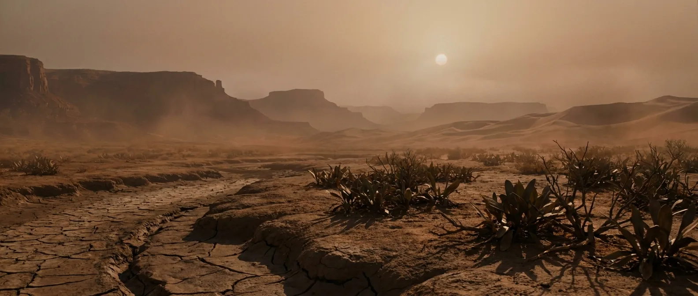
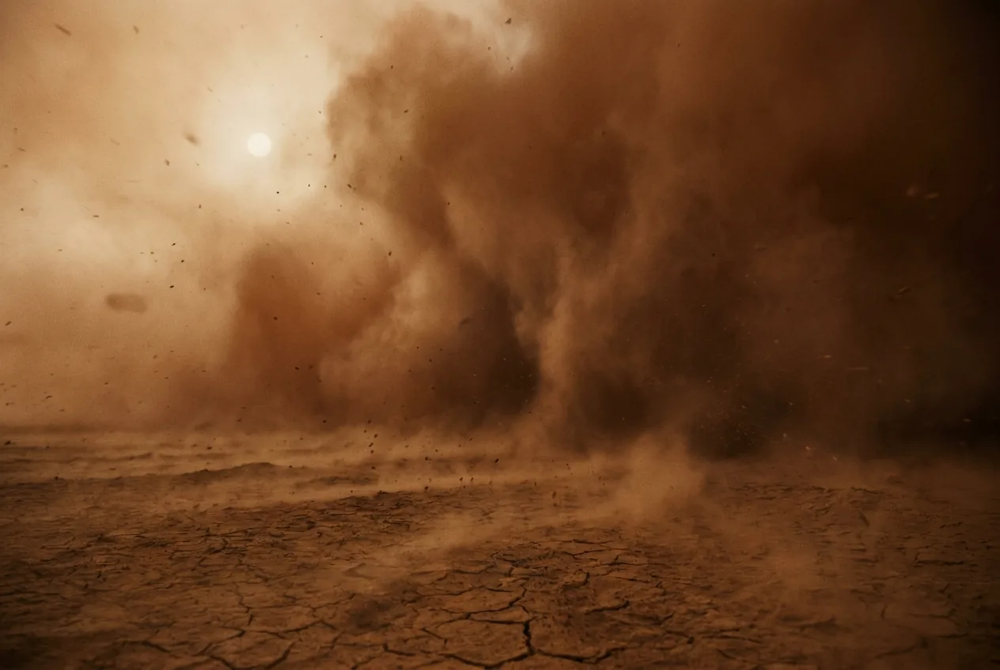
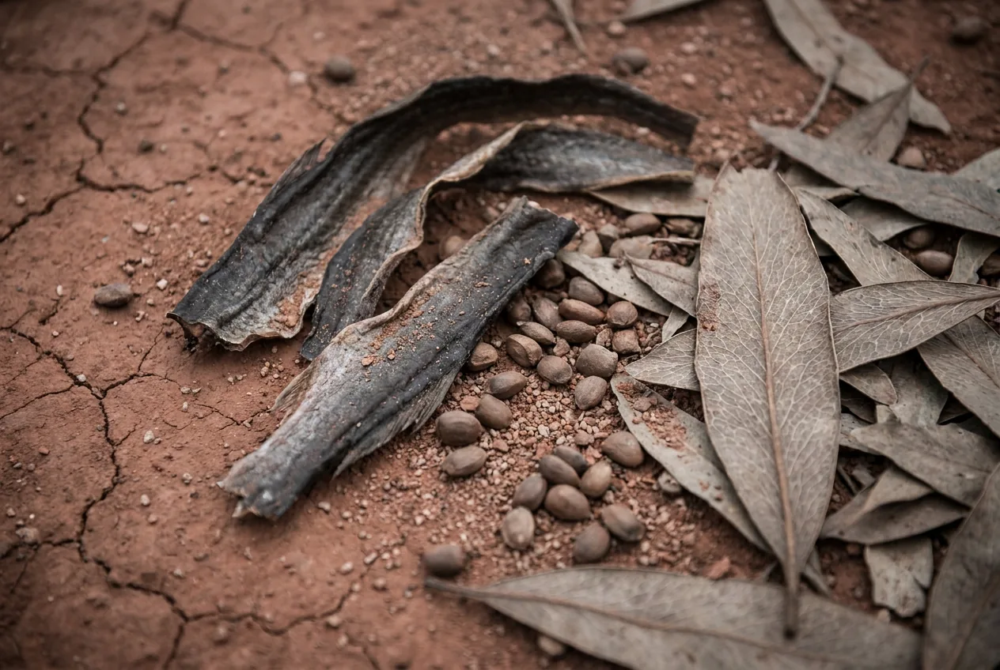

All the land on Earth is welded into one continent, and the middle of it is the driest place the planet has ever produced: thousands of kilometres from any coast, monsoon-flooded then baked. Also the first interval with animals that will deliberately hunt you.
On the coast, with forests and rivers, this is close to Devonian-grade liveable. Inland, it is a continental desert with 40 °C swings between seasons. Arrive in the last 60,000 years of the period and the number becomes hours.

Scale 0–40%. Starts near the Carboniferous peak and collapses through the period. By the end you are breathing thinner air than today while the temperature climbs.
A supercontinent has no maritime buffer at its centre. Summer heat and winter freeze in the same place, with a violent monsoon in between. The megamonsoon is the defining Permian weather system.
Every continent is joined. You could in principle walk from what will become Siberia to what will become Antarctica, which is also why land faunas everywhere look identical.
Scale 0–24 h. About 381 days per year.
The Great Dying, at 251.9 Ma. The worst event in the history of life, and the only one that came close to ending complex animals entirely. Recovery took around 10 million years.
Scale 0–30 m. A sabre-toothed therapsid, and part of the lineage that leads to mammals. The first animal on this site that would treat you as food.

Coastal Permian is forested, watered and workable. Interior Permian is a desert bigger than any that has existed since. There is no gradient between them worth walking, because the interior is thousands of kilometres across.
Gorgonopsids are fast, sabre-toothed and built for open ground. Unlike the Jurassic theropods that would simply be curious, these are predators at roughly your size class, in terrain with nowhere to hide.
The megamonsoon delivers a year of rain in weeks and then nothing. Surviving inland means reading a landscape you have never seen for water that appears twice a year.
Whatever strategy got you through one half of the year fails in the other. Coastal, you would keep going; inland, four months is generous.
The Siberian Traps erupt through coal beds and inject CO₂ for tens of thousands of years. Global temperature rises about 10 °C, tropical sea surface passes 40 °C, oceans go anoxic and euxinic, and hydrogen sulfide vents from the water. In the tropics, hours.
Stay coastal, stay early, and stay out of the middle of the continent.

Good early, deteriorating late. Early Permian air is the best on this site after the Carboniferous.
Seasonal and unreliable inland. Coastal rivers are dependable.
Fish, amphibians, small reptiles, seed-fern seeds. Glossopteris leaves cover the southern continents and do nothing for you, which stays the pattern until flowers arrive two periods later.
Yes, and easily. Dry season plus high oxygen makes control the issue, not ignition.
Timber on the coast, rock and sand inland. You will want walls here, for the first time on this site.
Gone. The Permian is where being a slow, soft, medium-sized animal starts to cost you.